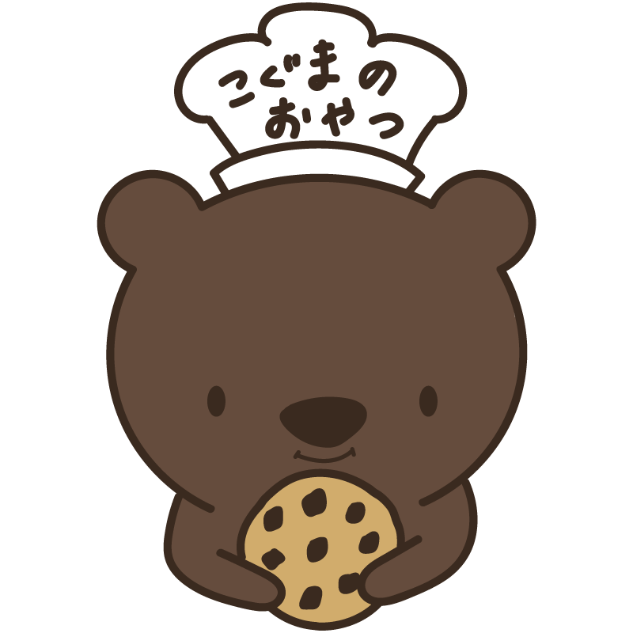

こぐまのおやつ
田舎の古民家を改装した、地元密着型の焼き菓子屋さんをイメージして作成したブランドです。
「なつかしさ」と「ぬくもり」を大切に、子どもからおばあちゃんまで思わず手に取りたくなるような、やさしい雰囲気を目指しました。
ロゴにはお店の看板キャラクター“こぐま”を起用し、手書き風のフォントやくすみカラーで素朴であたたかい印象に仕上げています。

ロゴ
お店の「顔」となるロゴは、焼きたてクッキーをぎゅっと抱きしめる“こぐま”のイラストで表現しました。 チョコチップクッキーのチップの数は8個。これは「末広がり」を意味する縁起の良い数字で、お店の発展や繁盛、そして幸せな未来への願いが込められています。

ロゴ（ウインク）
ロゴのウインクバージョンです。 遊び心を感じさせる表情で、見る人に親しみや可愛さを印象づけます。

ロゴ（笑顔）
ロゴの笑顔バージョンです。 クッキーを持ったこぐまがふわっと微笑むことで、ほっこりとした温かさを伝えます。

ショップカード（表面）
木のぬくもりを感じるデザインに仕上げました。 看板を持ったこぐまが呼びかけるような構図で、お客さまに親しみや安心感を持ってもらえるよう工夫しています。

ショップカード（裏面）
裏面はロゴのこぐまたちを使ったパターン柄。 よく見るとウインクや笑顔のこぐま、さらに逆さまのこぐまも隠れていて、細部まで遊び心を詰め込みました。